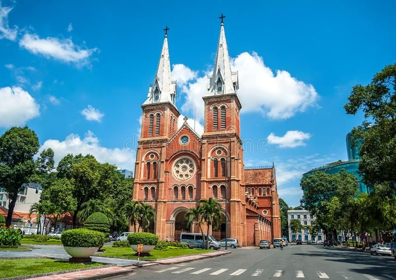
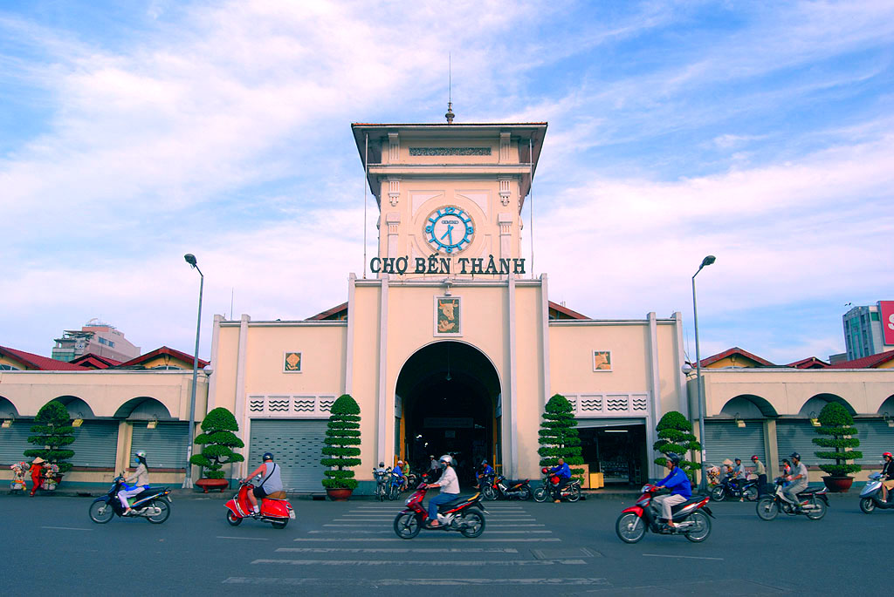
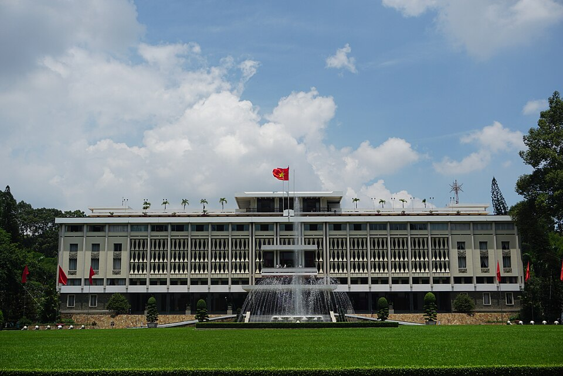

Thành tựu hành trình
Bản đồ chinh phục
Hồ sơ nhà khám phá
Khám phá địa điểm nổi bật

Nhà thờ Đức Bà
Nhà thờ Đức Bà là công trình kiến trúc nổi bật tại trung tâm TP.HCM.
Địa chỉ: Quận 1, TP.HCM
Gợi ý: Nên tham quan vào buổi sáng để chụp ảnh đẹp.

Chợ Bến Thành
Chợ Bến Thành là biểu tượng văn hóa và thương mại lâu đời của Sài Gòn.
Địa chỉ: Quận 1, TP.HCM
Gợi ý: Có thể ghé buổi tối để trải nghiệm ẩm thực đường phố.

Dinh Độc Lập
Dinh Độc Lập là di tích lịch sử quốc gia đặc biệt của Việt Nam.
Địa chỉ: Quận 1, TP.HCM
Gợi ý: Nên tham quan vào buổi sáng hoặc chiều mát.
Check-in địa điểm
Vui lòng đứng tại địa điểm để check-in.
Lịch sử check-in
Giới thiệu
Du lịch xanh – Travel local — trải nghiệm global. “Hộ chiếu Du lịch Di sản” hướng đến trải nghiệm du lịch thân thiện với môi trường và lan tỏa lối sống xanh đến cộng đồng. Bạn có thể cùng tụi mình: Mang theo bình nước cá nhân. Hạn chế sử dụng đồ nhựa dùng một lần. Ưu tiên đi bộ hoặc sử dụng phương tiện công cộng. Giữ gìn vệ sinh tại các điểm tham quan. Ủng hộ các sản phẩm thủ công và local brand địa phương. Một chuyến đi đẹp không chỉ nằm ở nơi bạn đến, mà còn ở cách bạn để lại dấu chân của mình trên hành trình đó.